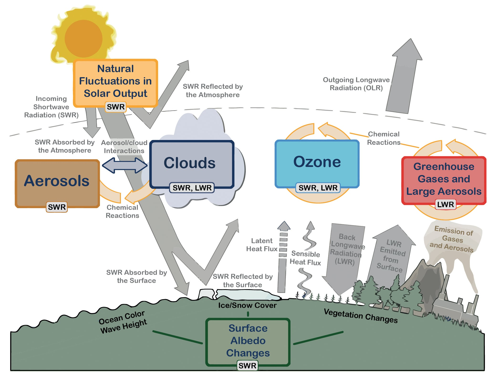
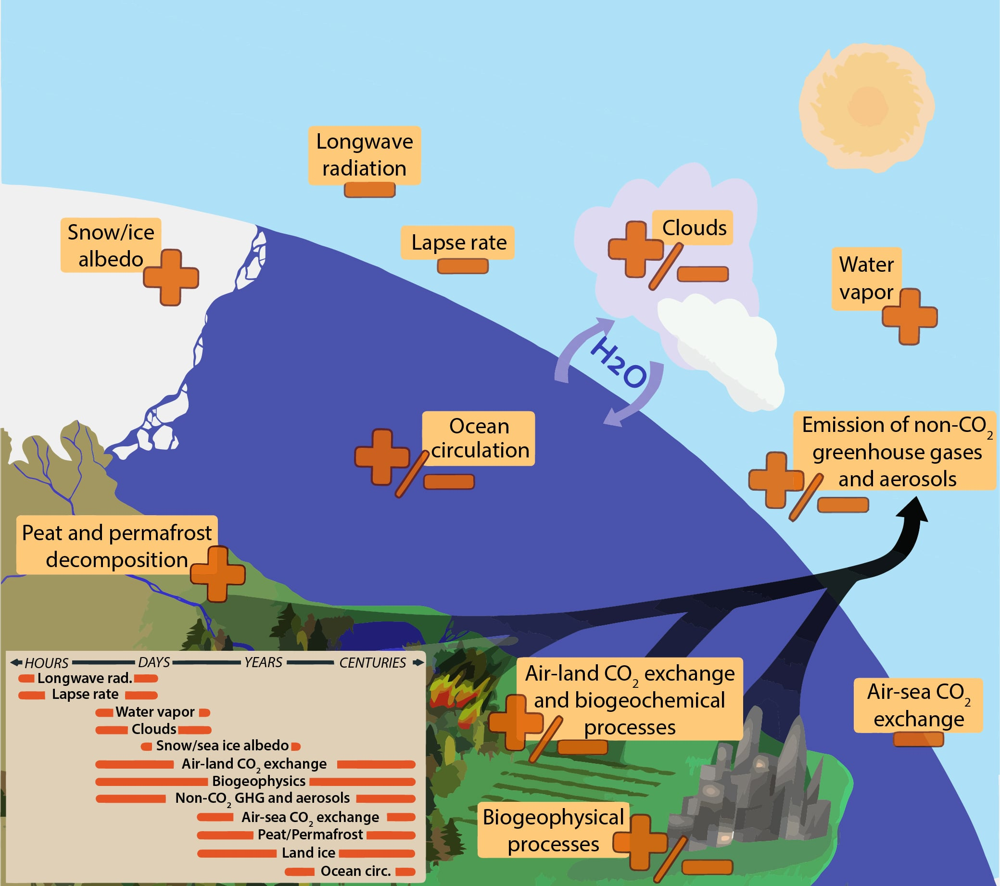
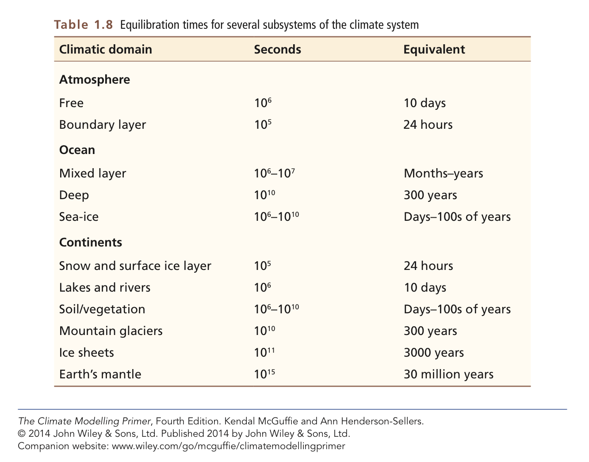
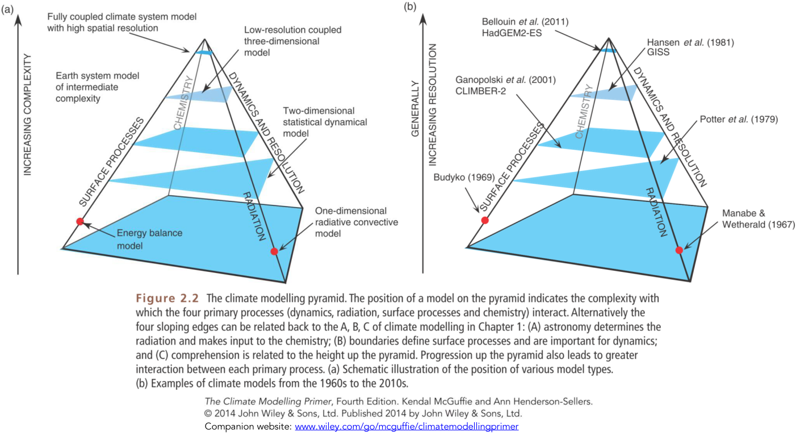

Week 7
The climate system and climate models
Adapted from The Climate Laboratory by Brian E. J. Rose, University at Albany.
1. The climate system and its interactions
Definition of the “climate system” and its “spheres”
From the IPCC AR5 report Cubasch et al., 2013:
Climate System
The climate system is the highly complex system consisting of five major components: the atmosphere, the hydrosphere, the cryosphere, the lithosphere and the biosphere, and the interactions between them. The climate system evolves in time under the influence of its own internal dynamics and because of external forcings such as volcanic eruptions, solar variations and anthropogenic forcings such as the changing composition of the atmosphere and land use change.
Components of the climate system
Atmosphere: The gaseous envelope surrounding the Earth.
Hydrosphere: The component of the climate system comprising liquid surface and subterranean water, such as oceans, seas, rivers, lakes, underground water, etc.
Biosphere: The part of the Earth system comprising all ecosystems and living organisms (both terrestrial and marine)… including derived dead organic matter, such as litter, soil organic matter and oceanic detritus.
Cryosphere: All regions on and beneath the surface of the Earth and ocean where water is in solid form, including sea ice, lake ice, river ice, snow cover, glaciers and ice sheets, and frozen ground (which includes permafrost).
Lithosphere: The upper layer of the solid Earth, both continental and oceanic, which comprises all crustal rocks and the cold, mainly elastic part of the uppermost mantle.
WHY might we want to include all these “spheres” in our models?
Let’s answer this by looking at two schematics from the IPCC AR5 WG1 report Cubasch et al., 2013:

Main drivers of climate change
- Solar output: variations change incoming shortwave radiation.
- Atmospheric composition: emissions and chemical reactions change greenhouse gases, ozone, and aerosols.
- Ozone and aerosols: absorb, scatter, or reflect radiation.
- Aerosol–cloud interactions: particles can act as cloud condensation nuclei and change cloud properties and precipitation.
- Clouds: affect both incoming sunlight and outgoing infrared radiation.
- Greenhouse gases: absorb and emit infrared radiation, changing outgoing longwave radiation.
- Surface albedo: changes with vegetation, land use, snow, ice, and ocean properties.
Adapted from IPCC AR5 WGI, Figure 1.1 (Cubasch et al., 2013).

Climate feedbacks and timescales
- Negative feedbacks: longwave radiation, lapse rate, and air–sea carbon exchange in this schematic.
- Positive feedbacks: water vapor and snow/ice albedo.
- Feedbacks that can have either sign: clouds, ocean circulation, air–land carbon exchange, and natural emissions of other greenhouse gases and aerosols.
- Different adjustment times: the inset shows that feedback processes operate over very different timescales.
Adapted from IPCC AR5 WGI, Figure 1.2 (Cubasch et al., 2013).
The key is that all these processes ultimately affect the planetary energy budget
Let’s talk about timescales.
The inset in the figure extends from hours to centuries, with deep-ocean circulation at the slow end. Still longer timescales include the growth and decay of ice sheets and geological processes such as chemical weathering and continental drift.
The choice of which processes to include in a model should therefore be guided by the timescales of interest. For example, the IPCC process is primarily concerned with the century timescale – because it is of special concern to human affairs. So we don’t tend to include ice sheet and geological feedbacks – though coupled ice sheet modeling is becoming more important.

We have already used these timescale ideas
- Atmosphere and surface: we assumed the atmosphere adjusted much faster, so we neglected its heat storage and kept it approximately in radiative equilibrium as the surface warmed.
- Surface and deep ocean: we gave the two reservoirs different heat capacities and coupled them through heat exchange. Together, these choices produced fast and slow adjustment modes.
- Model design: a process can be treated as rapidly equilibrating or given its own evolving state, depending on the timescales we want to study.
2. Simulation versus Parameterization
Parameterization
The process of capturing a physical process through some mathematical relationship between important parameters in the process, but without explicitly modeling all the actual processes. For example, the albedo of leaves might be related to the soil moisture (via some specification of wilting point) but the physical and biological mechanisms in the plant that happen when the leaf wilts are not modelled.
Source: McGuffie & Henderson-Sellers (2014), The Climate Modelling Primer, 4th edition, p. 124.
Parameterizations we have already used
- Greenhouse radiation: we represented atmospheric infrared absorption and emission with a single parameter, rather than calculating the contributions of individual gases and clouds.
- Horizontal heat transport: we represented the combined effect of winds and ocean currents using the temperature gradient and a transport coefficient, without predicting those motions.
In both cases, a simple relationship captured the net effect of processes we did not explicitly resolve.
Parameterizing radiation in our EBM
Our one-layer greenhouse model represented atmospheric infrared absorption and emission with the single parameter \(\epsilon\).
With a rapidly adjusting atmosphere,
\[ \mathrm{OLR}=\left(1-\frac{\epsilon}{2}\right)\sigma T_s^4. \]
Here \(T_s\) is surface temperature in kelvin and \(\epsilon\) is atmospheric longwave absorptivity/emissivity. We chose \(\epsilon\approx0.779\) to match the global-mean surface temperature.
The model does not predict the individual gases, cloud properties, or wavelength-dependent radiative transfer.
- Benefit: a simple, interpretable radiation law.
- Limitation: the model does not determine how \(\epsilon\) changes as humidity, clouds, and atmospheric composition change.
Parameterizing heat transport in our 1D EBM
We represented the combined transport by winds and ocean currents with a diffusive closure:
\[ H(\phi)=-2\pi R^2D\cos\phi\,\frac{\partial T}{\partial\phi}. \]
- \(H\) is northward heat transport across a latitude circle, in watts; \(\phi\) is latitude in radians and \(R\) is Earth’s radius.
- \(D\) sets transport strength, in \(\mathrm{W\,m^{-2}\,K^{-1}}\): heat flows down the temperature gradient.
- The model calculates heat transport without predicting the winds or currents that carry it.
How might \(D\) change in a different climate? Our closure does not answer that question by itself.
Simulation
Solve a large set of coupled equations for the time-dependent behavior of the atmosphere:
- Equations of radiative transfer, with detailed information about the various greenhouse gases
- Equations of fluid motion to predict growth and decay of weather system and movement of water vapor
- Cloud microphysics to predict the formation of cloud droplets and their optical properties
This is essentially what goes on in a so-called GCM (General Circulation Model or Global Climate Model).
Pro
Model is based on real physical principles (e.g. Newton’s laws of motion, conservation of mass and energy). It is therefore more likely to remain valid under changing climate conditions.
Con
Requires lots of computer resources. Must simulate the weather even though we really just want the climate (statistics of weather!)
Essentially a simulation involves representing (at least some aspects of) the underlying rules that govern the process. There is a chain of causality linking input to output.
Parameterization involves making assumptions about the statistical properties of the process – so we can calculate some relevant statistical properties of the output given the input, without needing to explicitly model the actual events.
3. A taxonomy of climate models
Key components and design choices of a climate model
- Radiation: absorption and reflection of sunlight, and absorption and emission of infrared radiation.
- Dynamics: winds and ocean currents, including horizontal and vertical transport of energy and other quantities.
- Surface processes: land-surface models represent soil, vegetation, and snow; sea-ice models represent freezing, melting, and ice motion. These components determine surface properties and exchanges of energy, water, and momentum. Land ice, such as glaciers and ice sheets, requires separate treatment.
- Chemistry and biogeochemistry: atmospheric composition and exchanges of substances, including carbon, among the atmosphere, ocean, and land.
- Resolution: horizontal and vertical spatial detail, and the time steps used to advance the model.
The climate modeling pyramid
Complexity increases upwards through more processes and interactions and finer resolution in space and time. The edges represent the model’s basic elements; simpler models lie near the base.

Citation information
Several figures above are reproduced from Chapter 1 of the IPCC AR5 Working Group 1 report. The report and images can be found online at https://www.ipcc.ch/report/ar5/wg1/
The full citation is:
Cubasch, U., D. Wuebbles, D. Chen, M.C. Facchini, D. Frame, N. Mahowald and J.-G. Winther, 2013: Introduction. In: Climate Change 2013: The Physical Science Basis. Contribution of Working Group I to the Fifth Assessment Report of the Intergovernmental Panel on Climate Change [Stocker, T.F., D. Qin, G.-K. Plattner, M. Tignor, S.K. Allen, J. Boschung, A. Nauels, Y. Xia, V. Bex and P.M. Midgley (eds.)]. Cambridge University Press, Cambridge, United Kingdom and New York, NY, USA, pp. 119–158, doi:10.1017/CBO9781107415324.007.
Some other figures are reproduced from The Climate Modelling Primer (4th ed) by Kendal McGuffie and Ann Henderson-Sellers, Wiley-Blackwell 2014.
Credits
This notebook is part of The Climate Laboratory, an open-source textbook developed and maintained by Brian E. J. Rose, University at Albany.
It is licensed for free and open consumption under the Creative Commons Attribution 4.0 International (CC BY 4.0) license.
Development of these notes and the climlab software is partially supported by the National Science Foundation under award AGS-1455071 to Brian Rose. Any opinions, findings, conclusions or recommendations expressed here are mine and do not necessarily reflect the views of the National Science Foundation.